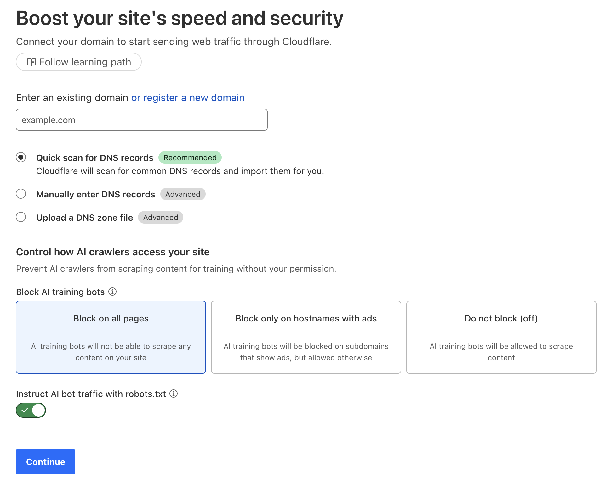
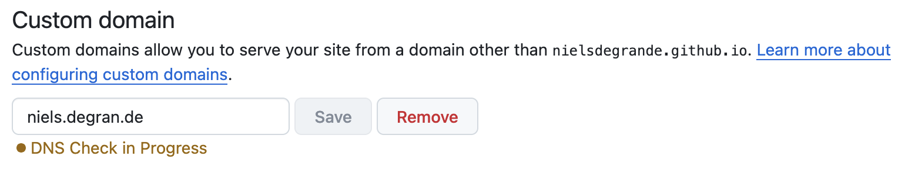
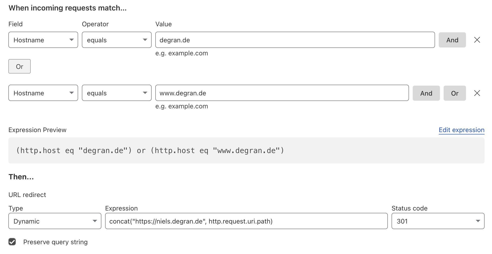
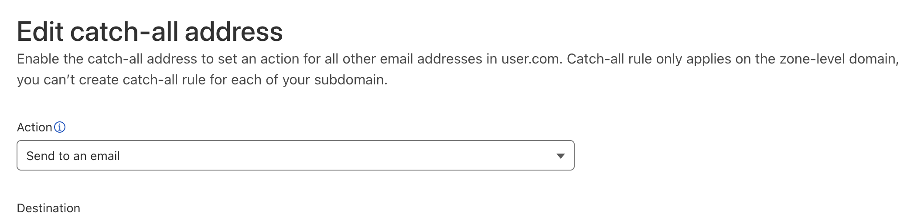
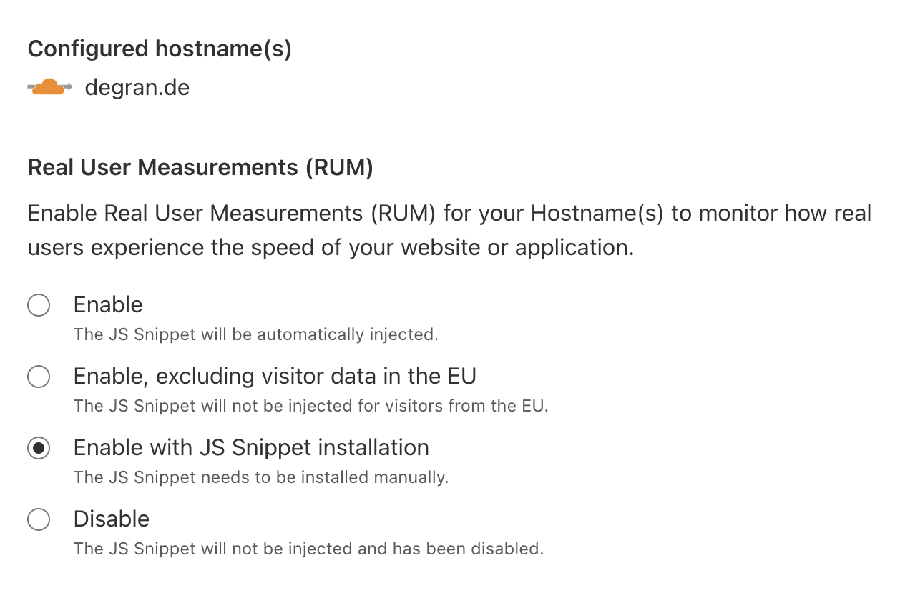

It's been many years since I hosted my first websites. Originally for my student association, then to give my parents' company an online presence. When it was time for my personal website (this one), I opted for the same hosting provider.
Meanwhile, time has moved on and much has changed. Not only has the technology evolved, the bill to host two very simple websites has ballooned. There's no Moore's law for captive hosting customers.
So I set out on a journey to remove hosting costs altogether: keeping feature parity while only paying for the domain name. It got a bit more involved, hence this blog post serves as documentation for my future self.
The ingredients to this recipe will involve:
While this blog has always been static pages, my parents' company website was a WordPress. Migrating that, for example the database, would be more complex and also highly unnecessary: it's a dead-simple page with some company information.
Taking a screenshot of the original (Firefox allows full-page screenshots), then asking Claude to reproduce it as a static HTML, CSS, and JS bundle gave a very good first version. Some prompting, reviewing and editing later, and we had a modern and clean design, the right information, and quality code.
Next was to deploy both websites with GitHub Pages. This is equally simple: go to Settings on your GitHub repository, point to the branch you want to deploy, and hit "Save".
Now both websites are live; however, they are under the nielsdegrande.github.io hostname.
Note that more complex deployment scenarios are possible. For example, here I compile and then publish a LaTeX document.
While I could have altered the DNS records with my current domain name (and hosting) provider, I was committed to abandoning them as much as I could.
I onboarded my domain on Cloudflare, which then provides instructions on how to point the nameservers for your domain to Cloudflare at the domain name provider, as well as (automatically) importing the existing DNS records.

Now you can go ahead and add your custom domain to your repositories with GitHub Pages.

It is important to verify your custom domain—here's how and why, which requires adding a TXT DNS record.
To ensure traffic reaches GitHub, you need to add A/AAAA records pointing to GitHub's IP addresses, as explained in the docs. As I host my personal website on a subdomain, I had a slightly different setup.
First, I used a CNAME record to send traffic to nielsdegrande.github.io, where the personal blog resides.
For the apex domain, I used a placeholder A record pointing to 192.0.2.1 (used as a blackhole IP), which is proxied by Cloudflare. This allows Cloudflare to intercept requests and apply redirect rules.
Here we configure the redirect rule to forward all traffic to the subdomain while preserving the path.

Originally, my hosting package came with support for unlimited mailboxes. Meanwhile their offering had changed, and this came at a surcharge. However, for old customers it continued to work, but I could not edit or remove these mailboxes anymore.
I discovered an amazing Cloudflare feature: by adding MX records pointing to Cloudflare's mail servers, you can catch-all emails on your domain and forward them to a chosen email address.
For example, any combination of .*@domainname.tld will end up at your chosen address.
You can set this up under Email → Email Routing → Routing rules.

Cloudflare Email Routing does not support outbound sending. For example, you cannot send or respond from hello@domainname.tld.
Hence, we either need to deploy our own mail server or use a service with a good free tier.
I did some research and felt SMTP2GO had a good offering.
The onboarding process is rather seamless. Instructions are here. It also involves ensuring correct SPF, DKIM, and DMARC records for domain reputation. This tool helped with the DMARC record. Here you can test if you did everything correctly.
After that, you can create a username and password, and use one of the many guides made available by SMTP2GO to set things up. For example, here's how to add your email address to Gmail through SMTP2GO: Gmail setup guide.
One limitation of the Cloudflare free tier is that it only issues TLS/SSL certificates up to the first level of subdomain.
As I host my personal blog on a subdomain, and I also want to direct www traffic, I had an issue with https://www.niels.degran.de.
The way I resolved it was by adding a very simple Cloudflare Pages website on the domain www.niels.degran.de, which redirects to niels.degran.de.
The project lives here.
Cloudflare does issue certificates for Cloudflare Pages.
Before, I used Google Analytics for my parents' company website, but I wanted to abandon it as well. Cloudflare Web Analytics lets you include a small JS snippet on every page for a cookie-free approach, which I found important.

The total cost is now just the domain registration fee. As far as I can tell, there is complete feature parity with the previous hosting provider. However, the free tiers come with some limitations: bandwidth, number of e-mails, workarounds for SSL certificates, etc. None of these are deal-breakers for my use case, but they might be for you.